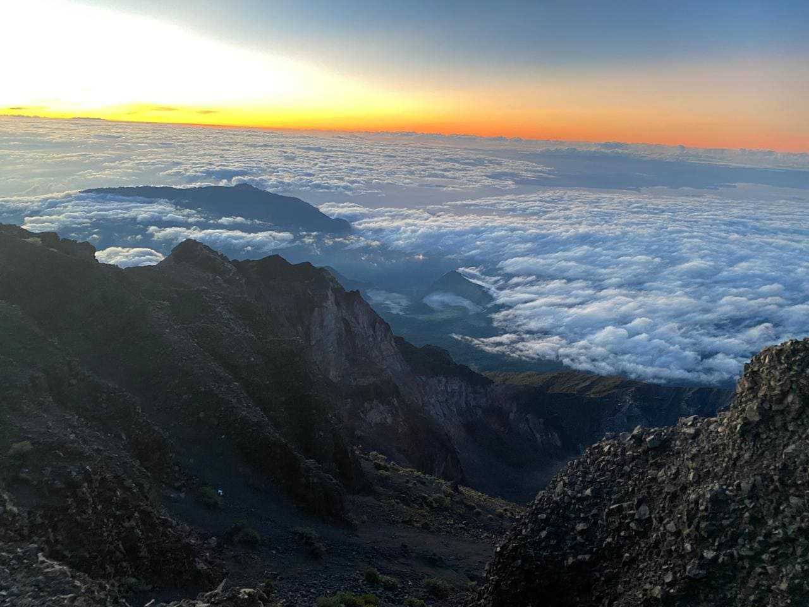
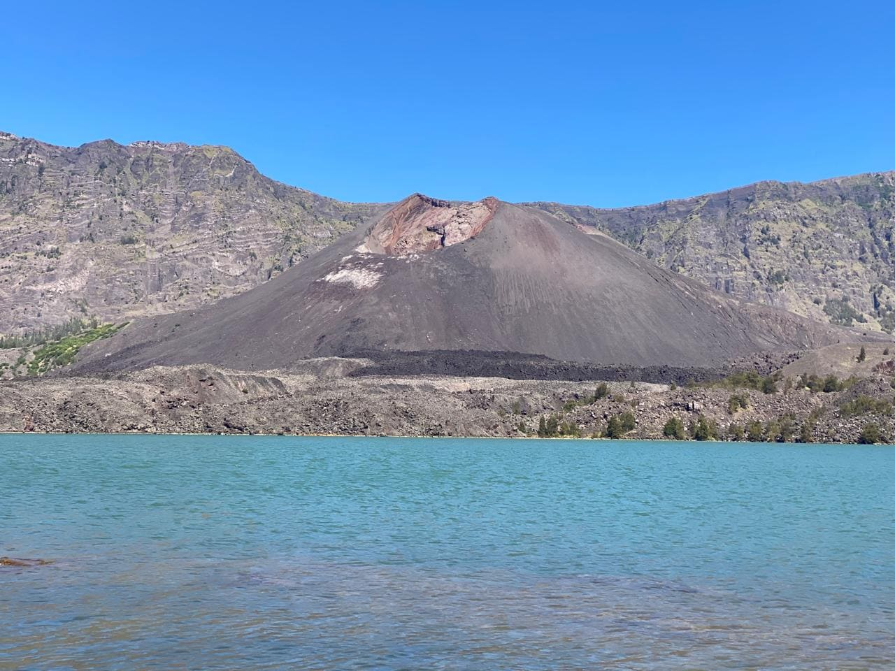
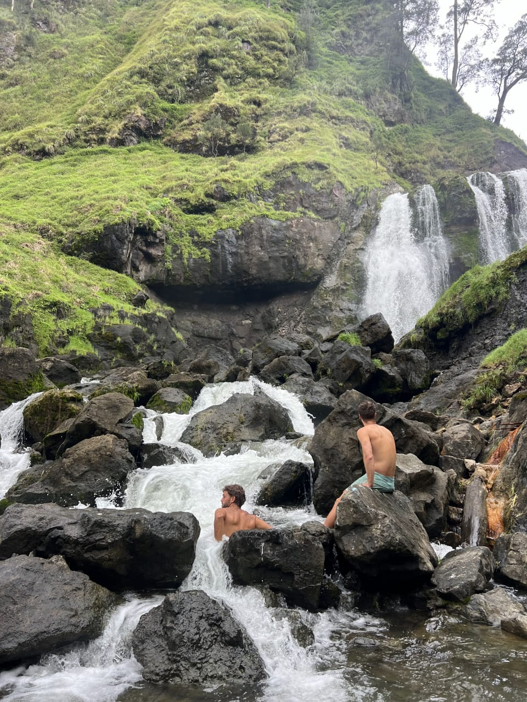

Climb via Sembalun, visit the summit and Segara Anak Lake's hot springs, then exit through the exotic Torean river valley — a quieter route home past scenic waterfalls.
From
USD 136/pax
Duration
3 Days 2 Nights
Highest Point
3,726 m
Trip Type
Small Group (Max. 4)
Difficulty
Challenging

With Rinjani Official, you'll join our Small Group concept, limited to a maximum of 4 climbers. This route summits via Sembalun, then exits through the less-crowded Torean valley — a great choice if you want the classic summit and lake experience with a more scenic, off-the-beaten-path way down.
Start light cardio training (brisk walking, jogging, stair climbing) 3–4 times a week to build stamina.
Recheck your personal gear (boots, jacket, headlamp) and make sure your boots are already broken in to avoid blisters.
Get enough rest, avoid staying up late, and arrive at the meeting point for the briefing session with your guide.
Above 3,000m, some climbers may experience AMS symptoms such as mild headache, nausea, or dizziness due to lower oxygen levels. Our guides are trained to recognize these symptoms and will adjust the walking pace to help your body adapt gradually.
Tips to reduce risk: stay hydrated by drinking water regularly, keep a steady walking pace (don't rush), and let your guide know immediately if you feel unwell.
Participants are expected to arrive independently in Sembalun Village, East Lombok, one day before the trek begins. Our team will meet you there for a preparation and briefing session. Arrival transport and accommodation are not included.

Registration at the Mount Rinjani National Park (TNGR) entrance.
Begin trekking across the open Sembalun savanna.
Lunch break at Pos 3 (1,800m).
Arrive at Plawangan Sembalun campsite (2,639m), enjoy the sunset over Segara Anak Lake.
Dinner and rest, ready for the summit push.

Wake up, light snack, then begin the summit push.
Arrive at the 3,726m summit at sunrise, with views of Lombok, Sumbawa, and Bali.
Descend back to Plawangan Sembalun for breakfast.
Trek down towards Segara Anak Lake (2,000m).
Arrive at the lake, lunch, and soak in the natural hot springs.
Continue towards the Torean-side campsite along the lake's edge, dinner and overnight.

Breakfast, then begin the descent via the exotic Torean route.
Trek along the Kokok Putih river valley, passing scenic waterfalls.
Lunch break along the trail.
Arrive at Torean Village. Free drop-off to the Bangsal, Senggigi, or Mataram area. Trek complete!
Our porter team carries the tents, cooking equipment, & logistics. You only need to bring a daypack (20–30L) containing:
Yes, as long as you're in good physical condition and have built up stamina beforehand. The Torean exit is a bit more remote, so a reasonable fitness level is recommended.
The Torean route is quieter and passes scenic river valleys and waterfalls, offering a different experience from the standard Senaru rainforest descent.
Safety comes first. If conditions are unsafe, the guide will adjust the itinerary, including the summit timing, in coordination with the on-the-ground team.
Contact our team directly via WhatsApp to check date availability, confirm pricing, and complete your booking.
From USD 136/pax
Join the Rinjani 3D2N Sembalun-Torean Small Group adventure with Rinjani Official and enjoy a safe, comfortable, and unforgettable trekking experience.